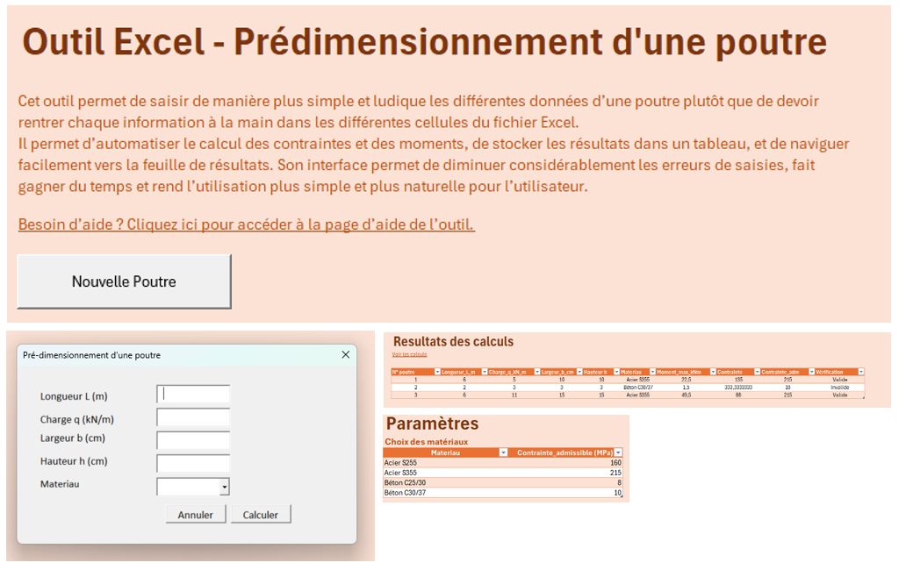

Retour aux projets
Outil Excel - Prédimensionnement d'une poutre

Contexte
Outil Excel conçu pour simplifier et rendre plus intuitive la saisie des paramètres de poutre (longueur, charge, largeur, hauteur, matériau). Il automatise le calcul des contraintes et des moments, enregistre les résultats dans un tableau et facilite la navigation vers les feuilles de résultats.
Objectifs
- Réduire les erreurs de saisie et gagner du temps
- Automatiser le calcul des moments max et des contraintes
- Stocker les résultats dans un tableau récapitulatif
- Rendre l'utilisation de l'outil plus simple et naturelle
Fonctionnalités
- Formulaire de saisie : Longueur L, Charge q, Largeur b, Hauteur h, choix du matériau
- Calcul automatique des contraintes et moments
- Tableau « Résultats des calculs » avec vérification (Valide / Invalide)
- Table des paramètres matériaux (contraintes admissibles par matériau)
- Page d'aide intégrée et accès aux feuilles de calcul détaillées
Technologies utilisées
Excel avancé, VBA, formules de calcul structurel
Résultats
L'outil permet une saisie plus rapide et fiable des données, une vérification immédiate (contrainte vs contrainte admissible) et une traçabilité des calculs via le tableau de résultats et les paramètres matériaux (acier S255, S355, béton C25/30, C30/37, etc.).